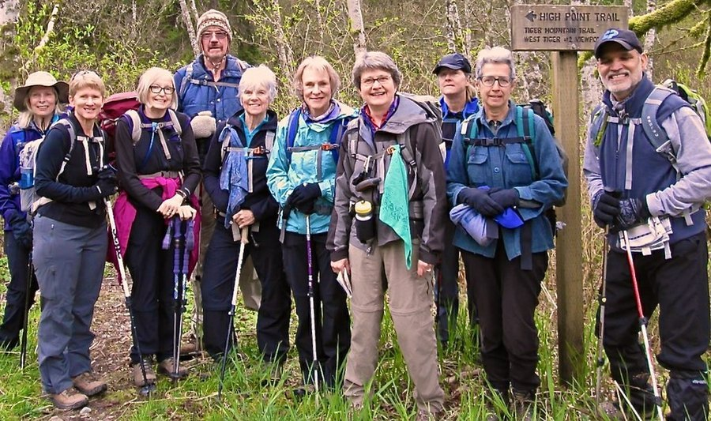

Knee Pain When Climbing Stairs: What's Really Going On
Stairs load the kneecap harder than flat walking does, so they're often the first place joint trouble shows up. Most of the time the cause is manageable, not dire.

Key takeaways
- Knee pain on stairs is most often patellofemoral pain syndrome, caused by the kneecap tracking unevenly against the thighbone under load, not by structural damage.
- Going down stairs usually hurts more than going up, because descending puts roughly 3 to 5 times your body weight through the kneecap joint.
- Age-related cartilage wear (osteoarthritis) is the other common cause, especially past 50, and it tends to come with stiffness after sitting, not just pain on stairs.
- Targeted strengthening of the muscles around the hip and knee, not rest alone, is the treatment with the most consistent evidence behind it.
- See a doctor if the knee buckles, swells, locks, or the pain started suddenly after a twist or fall; those point to a mechanical injury rather than ordinary wear.
If your knee pain climbing stairs keeps catching you off guard, you're not alone and it's rarely an emergency. The most common cause, by a wide margin, is patellofemoral pain syndrome: irritation where the kneecap glides against the end of the thighbone, aggravated by exactly the kind of bent-knee loading stairs require.
A smaller share of cases, more common after age 50, trace back to early cartilage wear under the kneecap or in the main knee joint. Both are manageable. Few cases need surgery. Here's how to tell them apart, what else can cause it, and which exercises actually help.
What causes knee pain when climbing stairs?
Stairs ask your knee to bend deeply while carrying your full body weight, which drives the kneecap (patella) harder into the groove at the end of the thighbone than almost any other everyday movement. When the muscles that steer the kneecap, especially the outer quadriceps and the hip abductors, aren't pulling evenly, the kneecap tracks slightly off-center and the cartilage underneath it gets irritated.
That irritation is patellofemoral pain syndrome, sometimes called "runner's knee" even in people who don't run. It's the single most common cause of stair-related knee pain in adults under 50, and it's a mechanical, fixable problem rather than a sign that something is torn or worn out.
Why does it hurt more going down stairs than up?
Descending is harder on the kneecap than climbing, which surprises most people. Research measuring joint forces during stair use has found the compressive load on the patellofemoral joint can run three to five times body weight on the way down, compared with roughly two to three times body weight going up.
Going down, your quadriceps work eccentrically, lengthening under tension to control your descent instead of simply shortening to lift you. That controlled-lowering action concentrates more force on the kneecap's underside. If one movement reliably hurts more than the other, going down is the one to expect.
What is patellofemoral pain syndrome, exactly?
It's a diagnosis of irritation, not a specific injury you can point to on an X-ray. The pain usually sits at the front of the knee or just around the kneecap, builds with stairs, squatting, or sitting for a long time with bent knees, and often comes with a dull ache rather than sharp, stabbing pain.
Weak hip muscles are a bigger contributor than most people expect. When the hip abductors and external rotators are weak, the thigh rotates inward slightly during single-leg loading, like climbing a stair, which pulls the kneecap off its ideal track. Strengthening the hip, not just the knee, is where most physical therapy protocols start.
Could it be arthritis instead?
Possibly, especially if you're over 50 and the pain comes with morning stiffness that eases after a few minutes of moving, a grinding or crunching sensation, or pain that's present even on flat ground, not just stairs. Osteoarthritis is gradual cartilage breakdown in the joint, and the knee is one of the joints it affects most often.
The practical difference: patellofemoral pain tends to be activity-triggered and younger-skewing, while osteoarthritis tends to be more constant, stiffer in the morning, and more common with age or a history of knee injury. Both can overlap, and both respond to many of the same strengthening approaches, which is reassuring either way.
What other conditions cause stair-climbing knee pain?
| Possible cause | What tends to set it apart |
|---|---|
| Patellofemoral pain syndrome | Dull ache behind or around the kneecap; worse with stairs, squatting, prolonged sitting; common at any adult age |
| Osteoarthritis | Morning stiffness, grinding sensation, gradual onset, more common after 50 |
| IT band syndrome | Pain on the outer side of the knee, often in runners or cyclists |
| Meniscus irritation | Pain with twisting or deep bending, sometimes a catching or locking feeling |
| Patellar tendinopathy | Tenderness right below the kneecap, worse with jumping or stair climbing |
| Chondromalacia patellae | Softening of the cartilage under the kneecap; feels similar to patellofemoral pain but can show on imaging |
This list isn't a way to self-diagnose with certainty. It's a way to describe your pain more precisely when you do talk to someone, since "it hurts on stairs" covers all six of these and a clinician will ask exactly these follow-up questions.
How do doctors or physical therapists figure out the cause?
Usually with a physical exam first: watching how you squat or step down, pressing around the kneecap to find the tender spot, and checking hip and quad strength. Imaging (X-ray or MRI) isn't always needed for patellofemoral pain, since it won't show up clearly on a scan, but it becomes useful if arthritis, a meniscus tear, or a ligament injury is suspected.
A physical therapist can often tell patellofemoral pain apart from early arthritis in one visit, using how the pain responds to specific movements and where exactly it's tender. That assessment, not a guess from symptoms alone, is what should guide the exercise plan.
What exercises actually help knee pain on stairs?
- Hip abductor work: side-lying leg raises or resistance-band "clamshells" strengthen the muscles that keep your thigh from rotating inward on stairs.
- Quad strengthening with a straight or slightly bent knee: wall sits, straight-leg raises, or short-arc leg extensions build strength without the deep bend that irritates the kneecap.
- Step-downs done slowly, with control: practicing the exact movement that hurts, at a low step height, retrains how your knee tracks under load.
- Calf and hamstring stretching: tight muscles around the knee can increase the pull on the kneecap. A few minutes most days helps.
- Low-impact cardio to stay active without reloading the joint: swimming and walking on flat ground keep you moving while the knee settles down. Our Joints & Mobility hub has more on staying active without flare-ups.
Most physical therapy protocols for patellofemoral pain run 6 to 12 weeks before pain noticeably improves. Consistency matters more than intensity: a few short sessions most days beats one hard workout a week.
What should you avoid doing?
Avoid total rest. A knee that stops moving entirely tends to get stiffer and weaker, which usually makes stair pain worse once you resume normal activity. At the same time, avoid pushing through sharp pain, deep squats, or high-impact activity like running stairs or jumping while the joint is actively irritated.
Taking stairs one at a time, leading with your stronger leg going up and your weaker leg going down, reduces load on the more painful side in the short term while you work on strength underneath it.
When should you see a doctor about knee pain on stairs?
Book an appointment if the pain is severe, started suddenly after a twist, fall, or impact, or comes with visible swelling, a knee that buckles or gives way, locking, or an inability to fully straighten or bend it. Those point toward a ligament, meniscus, or cartilage injury that benefits from an earlier look rather than a wait-and-see approach.
It's also worth seeing a doctor or physical therapist if stair pain has lasted more than two to three weeks despite rest and basic stretching, since that's the point where a structured exercise plan, rather than guessing, tends to make the difference.
How is stair-related knee pain usually treated?
For patellofemoral pain, first-line treatment is almost always a structured strengthening program, often alongside short-term activity modification (fewer deep squats, a brief break from running stairs) and sometimes taping or a knee sleeve for comfort during the irritated phase. Over-the-counter anti-inflammatories can ease pain short-term for some people, but they don't fix the underlying tracking issue.
For osteoarthritis, the same strengthening approach helps, often combined with weight management if relevant, since each extra pound of body weight adds several pounds of force through the knee with every step. Injections or surgery are generally reserved for cases that don't respond to months of conservative care, and that decision is one to make with an orthopedic specialist, not from an article.
Can losing weight actually reduce knee pain on stairs?
For many people, yes, and the effect is larger than it sounds. Because the knee multiplies body weight by several times with every stair step, a modest weight loss can translate into a meaningful drop in joint load. It's one of the few interventions with research support across both patellofemoral pain and knee osteoarthritis, though it works alongside strengthening, not instead of it.
How long does it usually take for stair-related knee pain to improve?
For patellofemoral pain managed with a consistent hip and quad strengthening routine, many people notice some improvement within 2 to 4 weeks, with fuller relief closer to the 6 to 12 week mark. That timeline assumes the exercises are done regularly, not just once or twice a week between flare-ups.
Osteoarthritis-related pain tends to improve more slowly and plateau at "better, not gone," since strengthening reduces load and improves function without regrowing lost cartilage. Setting that expectation early helps; people who expect a full, permanent fix sometimes stop a program that's actually working because the pain hasn't vanished entirely.
Can you prevent knee pain on stairs before it starts?
Building hip and quad strength before pain shows up is more effective than waiting for a flare-up, especially for people who already know they're prone to knee issues, have a desk job with long stretches of sitting, or are returning to running or hiking after time off. Two or three short strengthening sessions a week is a reasonable baseline for most adults.
Posture on the stairs themselves matters too. Letting your knee drift inward as you step, a pattern called dynamic valgus, loads the kneecap unevenly over thousands of repetitions. Consciously tracking your knee over your second toe, rather than letting it cave inward, is a small habit with a real cumulative effect.
Does the type of stairs or footwear matter?
Steeper, narrower stairs, common in older homes, demand a deeper knee bend per step and tend to provoke patellofemoral pain more than a gentler staircase does. Taking those stairs at an angle, or using a handrail to offload a bit of weight through your arm, reduces the knee's workload without avoiding the stairs altogether.
Footwear with worn-down soles or minimal cushioning can change how force travels up the leg, and some people with patellofemoral pain notice less discomfort in shoes with moderate support compared with flat, minimal footwear. This is a secondary factor, though. It's worth attention after strengthening is already underway, not instead of it.
Frequently asked questions
Is it normal for knees to hurt a little on stairs as you get older?
Mild, occasional twinges aren't unusual with age, but pain that's frequent, worsening, or limiting how you move around your home isn't something to just accept. It's worth getting it assessed, since most causes respond well to targeted exercise.
Do knee braces or sleeves help with stair pain?
A simple compression sleeve or patellar strap can ease discomfort for some people during the irritated phase, mostly by improving proprioception and reducing swelling. It's a short-term comfort measure, not a substitute for the strengthening work that addresses the underlying cause.
Is cracking or popping in the knee on stairs a sign of damage?
Not usually on its own. Painless clicking or popping (crepitus) is common and often harmless. It becomes more concerning only when it's paired with pain, swelling, or a feeling of the knee catching or giving way.
Can running cause knee pain that shows up mainly on stairs?
Yes. Runners are prone to patellofemoral pain and IT band irritation, and both can be more noticeable on stairs than during a run itself, since stairs isolate the exact bent-knee, single-leg loading pattern that aggravates them.
Should I stop climbing stairs entirely if it hurts?
Generally no. Complete avoidance tends to weaken the muscles that support the knee, which can make the pain worse over time. Modifying how you climb (one foot at a time, leading with the stronger leg) while you work on strength is usually better than avoiding stairs altogether.
Can shoes make a real difference for knee pain on stairs?
They can play a supporting role. Worn-out or unsupportive shoes can slightly change how force travels up through the leg, and some people notice less knee discomfort after switching to shoes with better cushioning or support, though shoes alone rarely resolve the underlying issue.
Is stair-related knee pain more common in women?
Patellofemoral pain syndrome is diagnosed somewhat more often in women, and a wider pelvis and different hip-to-knee alignment are commonly cited factors, though individual anatomy and muscle strength matter more than sex alone.
Will stretching alone fix patellofemoral pain?
Stretching helps with the tightness that contributes to poor kneecap tracking, but research consistently shows strengthening, especially of the hips, produces better and longer-lasting improvement than stretching by itself.
Related: Walking and brain health: how daily steps protect memory · Swimming and brain health: does this exercise have special cognitive benefits? · Tai chi and cognitive function: what the research shows
Image: nordique / Openverse (Flickr) / CC BY 2.0